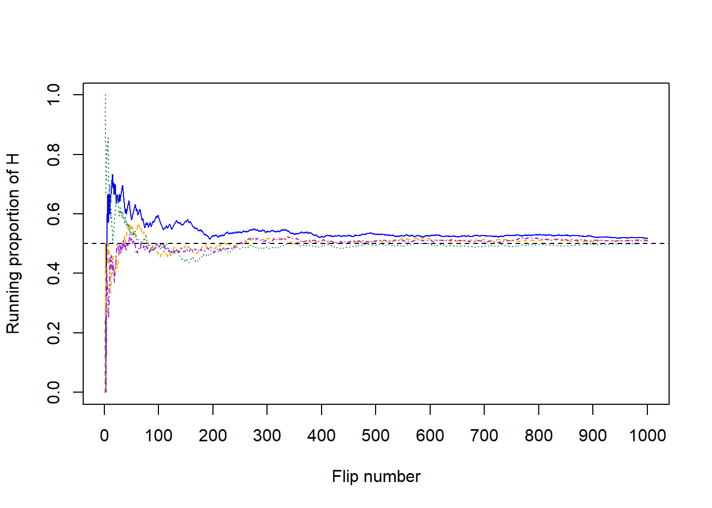
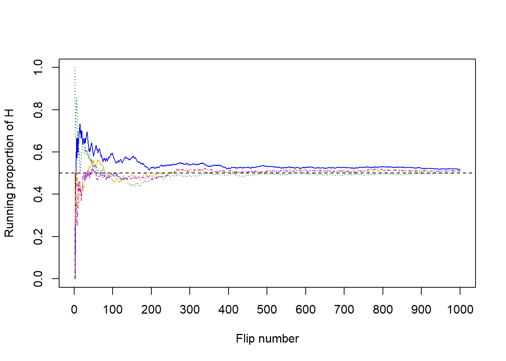

1.2 Interpretations of probability
In the previous section we encountered a variety of scenarios which involved uncertainty, a.k.a. randomness. Just as there are a few “types” of randomness, there are a few ways of interpreting probability, namely, long run relative frequency and subjective probability.
1.2.1 Long run relative frequency
We can all agree that the probability that a single flip of a fair coin lands on heads is 1/2, a.k.a., 0.5, a.k.a, 50%. After all, the notion of “fairness” implies that the two outcomes, heads and tails, should be equally likely, so we have a “50/50 chance” of heads. But how else can we interpret this 50%? One interpretation involves considering what would happen if we flipped the coin main times. Now, if we would flipped the coin twice, we wouldn’t expect to necessarily see one head and one tail. But in many flips, we might expect to see heads on something close to 50% of flips.
Let’s try this out. Table 1.1 displays the results of 10 flips of a fair coin. The first column is the flip number and the second column is the result of the flip. The third column displays the running proportion of flips that result in H. For example, the first flip results in T so the running proportion of H after 1 flip is 0/1; the first two flips result in (T, T) so the running proportion of H after 2 flips is 0/2; and so on. Figure 1.1 plots the running proportion of H by the number of flips. We see that with just a small number of flips, the proportion of H fluctuates considerably and is not guaranteed to be close to 0.5. Of course, the results depend on the particular sequence of coin flips. We encourage you to flip a coin 10 times and compare your results.
| Flip | Result | Running proportion of H |
|---|---|---|
| 1 | T | 0.000 |
| 2 | T | 0.000 |
| 3 | H | 0.333 |
| 4 | H | 0.500 |
| 5 | H | 0.600 |
| 6 | H | 0.667 |
| 7 | T | 0.571 |
| 8 | H | 0.625 |
| 9 | H | 0.667 |
| 10 | T | 0.600 |

Figure 1.1: Running proportion of H versus number of flips for the 10 coin flips in Table 1.1.
Now we’ll flip the coin 90 more times for a total of 100 flips. The plot on the left in Figure 1.2 summarizes the results, while the plot on the right also displays the results for 3 additional sets of 100 flips. The running proportion fluctuates considerably in the early stages, but settles down and tends to get closer to 0.5 as the number of flips increases. However, even after 100 flips the proportion of flips that result in H isn’t guaranteed to be very close to 0.5.


Figure 1.2: Running proportion of H versus number of flips for four sets of 100 coin flips.
Now for each set of 100 flips, we’ll flip the coin 900 more times for a total of 1000 flips in each of the four sets. The plot on the left in Figure 1.3 summarizes the results for our original set, while the plot on the right also displays the results for the three additional sets from Figure 1.3. Again, the running proportion fluctuates considerably in the early stages, but settles down and tends to get closer to 0.5 as the number of flips increases. There is less variability in the proportion of H after 1000 flips than after 100. Now, even after 1000 flips the proportion of flips that result in H isn’t guaranteed to be exactly 0.5, but we see a tendency for the proportion to get closer to 0.5 as the number of flips increases.
 

Figure 1.3: Running proportion of H versus number of flips for four sets of 1000 coin flips.
In summary, in a large number of flips of a fair coin we expect about 50% of flips to result in H. That is, the probability that a flip of a fair coin results in H can be interpreted as the long run proportion of flips that result in H, or in other words, the long run relative frequency of H.
In general, the probability of an event associated with a random phenomenon can be interpreted as a long run proportion or long run relative frequency: the probability of the event is the proportion of times that the event would occur in a very large number of hypothetical repetitions of the random phenomenon.
The long run relative frequency interpretation of probability can be applied when a situation can be repeated numerous times, at least conceptually, and the outcome can be observed each time. One benefit of the relative frequency interpretation is that the probability of an event can be approximated by simulating the random phenomenon a large number of times and determining the proportion of simulated repetitions on which the event occurred out of the total number of repetitions in the simulation. A simulation involves an artificial recreation of the random phenomenon, usually using a computer. After many repetitions the relative frequency of the event will settle down to a single constant value, and that value is the approximately the probability of that event.
Of course, the accuracy of simulation-based approximations of probabilities depends on how well the simulation represents the actual random phenomenon. Conducting a simulation can involve many assumptions which influence the results. Simulating many flips of a fair coin is one thing; simulating an entire NFL season and the winner of the Superbowl is an entirely different story.
Example 1.2 In each of the following, write a clearly worded sentence interpreting the numerical value of the probability as a long run relative frequency in context. (Just take the numerical values— 0.1, 0.25, and 0.73 — as given. We’ll see how to compute probabilities later.)
- The probability that a roll of a fair ten-sided die lands on 1 is 0.1.
- The probability that two flips of a fair coin both land on H is 0.25.
- The probability that in 100 flips of a fair coin the proportion of flips that land on H is between 0.45 and 0.55 is 0.73.
Show/hide solution
- About 10% of rolls of a fair ten-sided result in a roll of 1. The phenomenon is a roll of a far ten-sided die and the event of interest is whether or not the die lans on 1.
- In about 25% of sets of two fair coin flips, both flips in the set land on H. The phenomenon involves two flips of a coin, so we consider what would happen over many sets of two flips each.
- In about 73% of sets of 100 fair coin flips, the proportion of H for the set is between 0.45 and 0.55. The phenomenon involves 100 coin flips, so we consider many sets of 100 coin flips each, each set resulting in a proportion of H that is either between 0.45 and 0.55 or not. Imagine adding many more paths to the plot on the right in Figure 1.2, each corresponding to a set of 100 flips, and seeing how many of the paths result in a value between 0.45 and 0.55 at flip 100.
1.2.2 Subjective probability
The long run relative frequency interpretation is natural in repeatable situations like flipping a coin, drawing Powerballs from a bin, or selecting a Cal Poly student at random.
On the other hand, it is difficult to conceptualize some scenarios in the long run. Superbowl 2021 will only be played once, the 2021 Georgia run off election will only be conducted once, and there was only one April 17, 2009 on which you either did or did not eat an apple. But while these situations are not naturally repeatable they still involve randomness (uncertainty) and it is still reasonable to assign probabilities. At this point in time, the Kansas City Chiefs are more likely than the Jacksonville Jaguars to win Superbowl 2021, each of the candidates in the Georgia Senate races are about equally likely to win, and if you’ve always been an apple-a-day person, there’s a good chance you ate one on April 17, 2009. So it still makes sense to talk about probability in uncertain, but not necessarily repeated, situations.
{kind=link}
However, the meaning of probability does seem different in a physically repeatable situations like coin flips than in single occurrences like the 2021 Superbowl. Let’s switch sports and consider the 2020 World Series of Major League Baseball3. As of Sept 3,
- According to FiveThirtyEight, the Los Angeles Dodgers have a 31% chance of winning the 2020 World Series, the highest of any team, while the New York Yankees have a 10% chance.
- According to FanGraphs, the Dodgers have a 18% chance of winning the 2020 World Series, while the Yankees have an 6% chance.
- According to gambling site Odds Shark, the Dodgers have a 22% chance of winning the 2020 World Series, while the Yankees have an 18% chance.
Each website, as well as many others, assigns different probabilities to the Dodgers or Yankees winning. Which website, if any, is “correct”?
When the situation involves a fair coin flip, we could perform a simulation to see that the long run proportion of flips that land on H is 0.5, and so the probability that a fair coin flip lands on H is 0.5. Even though the actual 2020 World Series will only happen once, we could still perform a simulation involving hypothetical repetitions. However, simulating the World Series involves first simulating the 2020 season to determine the playoff matchups, then simulating the playoffs to see which teams make the World Series, then simulating the World Series matchup itself. And simulating the 2020 season involves simulating all the individual games. Even just simulating a single game involves many assumptions; differences in opinions with regards to these assumptions can lead to different probabilities. For example, on Sept 3, according to FiveThirtyEight the Dodgers had a 68% chance of beating the Colorado Rockies in their game on Sept 4, but according to FanGraphs it was 67% and according to Odds Shark it was 72%. (The Dodgers won.) Even though these differences might seem small, many small differences over the course of the season could result in large differences in predictions for the World Series champion.
Unlike physically repeatable situations such as flipping a coin, there is no single set of “rules” for conducting a simulation of a season of baseball games or the World Series champion. Therefore, there is no single relative frequency that determines the probability. Instead we consider subjective probability.
A subjective (a.k.a. personal) probability describes the degree of likelihood a given individual assigns to a certain event. As the name suggests, different individuals (or probabilistic models) might have different subjective probabilities for the same event. In contrast, in the long run relative frequency interpretation the probability is agreed to be defined as the long run relative frequency, a single number.
Think of subjective probabilities as measuring relative degrees of likelihood or uncertainty rather than long run relative frequencies. For example, in the FiveThirtyEight forecast, the Dodgers are 3.1 times more likely to win the World Series than the Yankees (3.1 = 0.31 / 0.10). Relative likelihoods can also be compared across different forecasts or scenarios. For example, FiveThirtyEight believes that the Dodgers are about 1.4 times more likely to win the World Series than Odds Shark does. Also, FiveThirtyEight believes that the likelihood that a fair coin lands on H is about 5 times larger than the likelihood that the Yankees win the 2020 World Series.
The FiveThirtyEight MLB predictions are the output of a probabilistic forecast. A probabilistic forecast combines observed data and statistical models to make predictions. Rather than providing a single prediction (such as “the Los Angeles Dodgers will win the 2020 World Series”), probabilistic forecasts provide a range of scenarios and their relative likelihoods. Such forecasts are subjective in nature, relying upon the data used and assumptions of the model. Changing the data or assumptions can result in different forecasts and probabilities. In particular, probabilistic forecasts are usually revised over time as more data becomes available.
Simulations can also be based on subjective probabilities. If we were to conduct a simulation consistent with FiveThirtyEight’s model (as of Sept 3), then in about 31% of repetitions the Dodgers would win the World Series, and in about 10% of repetitions the Yankees would win. Of course, different sets of subjective probabilities correspond to different assumptions and different ways of conducting the simulation.
Subjective probabilities can be calibrated by weighing the relative favorability of different bets, as in the following example.
Example 1.3 What is your subjective probability that Professor Ross has a TikTok account? Consider the following two bets, and suppse you can choose only one.
- You win $100 if Professor Ross has a TikTok account, and you win nothing otherwise.
- A box contains 40 green and 60 gold marbles that are otherwise identical. The marbles are thoroughly mixed and one marble is selected at random. You win $100 if the selected marble is green, and you win nothing otherwise.
- Which of the above bets would you prefer? Or are you completely indifferent? What does this say about your subjective probability that Professor Ross has a Tik Tok account?
- If you preferred bet B to bet A, consider bet C which has a similar setup to B but now there are 20 green and 80 gold marbles. Do you prefer bet A or bet C? What does this say about your subjective probability that Professor Ross has a Tik Tok account?
- If you preferred bet A to bet B, consider bet D which has a similar setup to B but now there are 60 green and 40 gold marbles. Do you prefer bet A or bet D? What does this say about your subjective probability that Professor Ross has a Tik Tok account?
- Continue to consider different numbers of green and gold marbles. Can you zero in on your subjective probability?
Solution. to Example 1.3
Show/hide solution
- Since the two bets have the same payouts, you should prefer the one that gives you a greater chance of winning! If you choose bet B you have a 40% chance of winning.
- If you prefer bet B to bet A, then your subjective probability that Professor Ross has a TikTok account is less than 40%.
- If you prefer bet A to bet B, then your subjective probability that Professor Ross has a TikTok account is greater than 40%.
- If you’re indifferent between bets A and B, then your subjective probability that Professor Ross has a TikTok account is equal to 40%.
- If you choose bet C you have a 20% chance of winning.
- If you prefer bet C to bet A, then your subjective probability that Professor Ross has a TikTok account is less than 20%.
- If you prefer bet A to bet C, then your subjective probability that Professor Ross has a TikTok account is greater than 20%.
- If you’re indifferent between bets A and C, then your subjective probability that Professor Ross has a TikTok account is equal to 20%.
- If you choose bet D you have a 60% chance of winning.
- If you prefer bet D to bet A, then your subjective probability that Professor Ross has a TikTok account is less than 60%.
- If you prefer bet A to bet D, then your subjective probability that Professor Ross has a TikTok account is greater than 60%.
- If you’re indifferent between bets A and D, then your subjective probability that Professor Ross has a TikTok account is equal to 60%.
- Continuing in this way you can narrow down your subjective probability. For example, if you prefer bet B to bet A and bet A to bet C, your subjective probability is between 20% and 40%. Then you might consider bet E corresponding to 30 gold marbles and 70 green to determine if you subjective probability is greater than or less than 30%. At some point it will be hard to choose, and you will be in the ballpark of your subjective probability. (Think of it like going to the eye doctor: “which is better: 1 or 2?” At some point you can’t really see a difference.)
Of course, the strategy in the above example isn’t an exact science, and there is a lot of behavioral psychology behind how people make choices in situations like this. But the example gives a very rough idea of how you might discern a subjective probability of an event.
Disclaimer: we do not advocate gambling. We merely use gambling contexts to motivate probability concepts.
which already happened, but I’m too lazy to update the examples. Imagine that when you’re reading this it’s Sept 3, 2020.↩︎